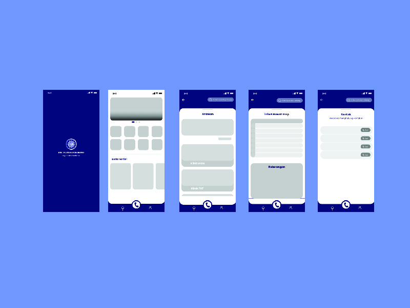

Saya memilih aplikasi ini karena menurut saya untuk tampilan UI nya kurang eyecatching. ada beberapa tampilan di aplikasi ini yang menurut saya masih kurang efektif untuk penempatannya, karna saya pernah mencoba aplikasi tersebut dan agak sedikit kurang pas menurut saya di beberapa menu.
Tabel di atas berisikan daftar poin-point yang perlu di redesign dan table rencana redesignya.
Untuk hasil Redesign tampilan Aplikasi Rsu Aisyiyah ponorogo seperti di atas